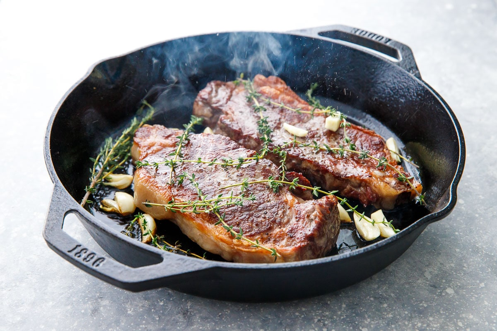

Reverse Seared Steak

Reverse Seared Steak
Premium steak that is slow roasted
before searing at a very high temparature to
create a crisp outer crust. The reverse sear method offers several benefits
compared to the traditional method of searing steak. These include:
- More even cooking;
- Better browning;
- More tender meat; and
- Greater control.
Ingredients
- Premium steak (e.g. ribeye, sirloin, porterhouse) - must
be at least 4cm thick.
- Maldon salt flakes.
- Unsalted butter (optional).
- Garlic (optional).
- Two or three sprigs of fresh thyme (optional).
Method
- Season steak generously with salt.
- Preheat oven to 100 degrees centigrade.
- Place steak on a wire rack and cook until internal temperature
reaches 45 degrees centigrade (for medium rare) - approx. 25 minutes.
- Meanwhile, heat a heavy frying pan over a very high heat.
- Transfer steak to frying pan and sear on all sides.
- Optional: add butter, garlic and thyme to the pan with the steak,
and baste steak in melted butter during sear.
- Serve immediately.